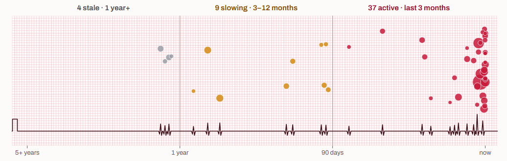
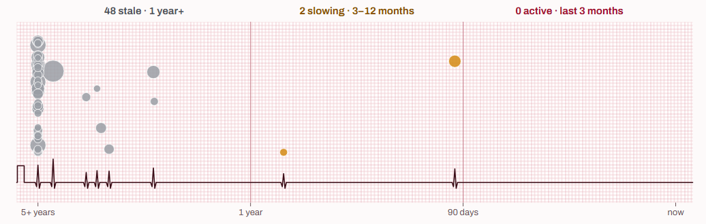
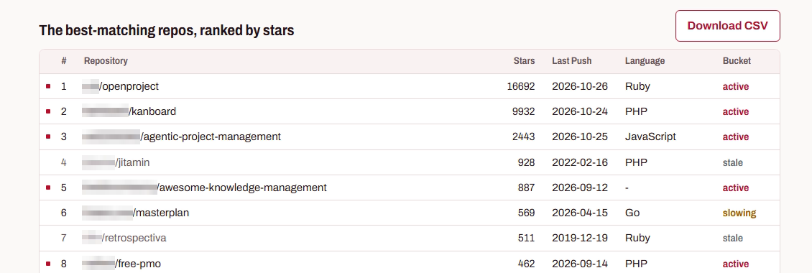

Two real searches
mcp server
Showing the 50 best-matching of 177,486 repos, 37 active among them — most recent entrant pushed 3 minutes ago

The strip opens at “now”. Swipe it for older years.
The trace keeps beating.
angularjs directive
Showing the 50 best-matching of 3,137 repos, 0 active among them — most recent entrant pushed 3 months ago

The trace flatlines.
Two real searches, 26 October 2026.
For people about to build
Before you start a side project, a course project or a new tool, you want to know whether anyone is still working on the idea. Are there active projects you could join or learn from, or is the topic a graveyard of abandoned repositories? RepoScout answers that with one search instead of an afternoon of clicking through GitHub.
One search, four answers
A search for project management software, on 26 October 2026:


- The verdict. One sentence: “Showing the 50 best-matching of 14,067 repos, 10 active among them — most recent entrant pushed 1 minute ago.”
- The heartbeat strip. Each dot is a repository. Further right means pushed more recently, bigger means more stars. Three zones: stale (over a year), slowing (3 to 12 months), active (last 3 months). The line along the bottom spikes wherever repositories were pushed, so a dead topic flatlines across the active zone.
- The table. The same 50 repositories ranked by stars, with last push date, language and activity group. Each name links to the repository on GitHub.
- Download CSV. The same rows as a file (
project-management-software-report.csv) that you can open in a spreadsheet.
Try it
In your browser
Type a topic or click one of the examples. No account, no token. GitHub allows 10 searches a minute without signing in, shared by everyone on the same network: on a busy Wi-Fi, wait a minute and try again (the page says when). Results are kept in your browser for 24 hours, so repeating a search is instant.
On the command line
Python 3.10 or newer.
git clone https://github.com/esst-prog2/RepoScout
cd RepoScout
python -m venv .venv
.venv\Scripts\activate # macOS/Linux: source .venv/bin/activate
pip install .
reposcout search "project management software"It applies the same rules, prints the same verdict sentence and writes the same CSV. With a free GitHub token it gets 30 searches a minute. The user manual covers other platforms and the token setup.
Honest limits
- It reads the 50 best matches, not every repository. When there are more, the verdict says so (“50 best-matching of 14,067”).
- “Active” means pushed in the last 3 months. GitHub's push time isn't always the latest commit. When we checked 50 repositories, 5 landed in a different group because of that.
- It matches words, not meaning. A search can pick up repositories that use the same words for something else. Put quotes around an exact phrase.
- It's a snapshot. The numbers on this page are from 26 October 2026. Run the search yourself for today's.